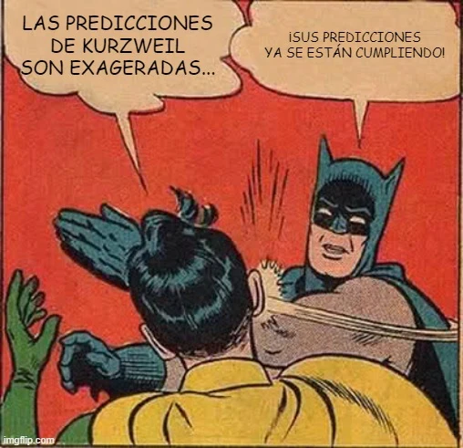

estrategIA #40 ·
Las predicciones de Kurzweil
El contexto
Batman y Robin encarnan el desacuerdo sobre las previsiones tecnológicas de Ray Kurzweil. El número comentaba su libro sobre la cercanía de la singularidad; la escena condensa el entusiasmo y el escepticismo que suscitan esas predicciones.
Publicado en: estrategIA #40: El futuro a la vuelta de la esquina: Kurzweil revisa sus predicciones en “The Singularity is nearer” y adelanta la fecha de la fusión de la mente humana con la IA
Leer el texto de la imagen
LAS PREDICCIONES DE KURZWEIL SON EXAGERADAS... ¡SUS PREDICCIONES YA SE ESTÁN CUMPLIENDO!
Marca de la herramienta visible en el original: imgflip.com.